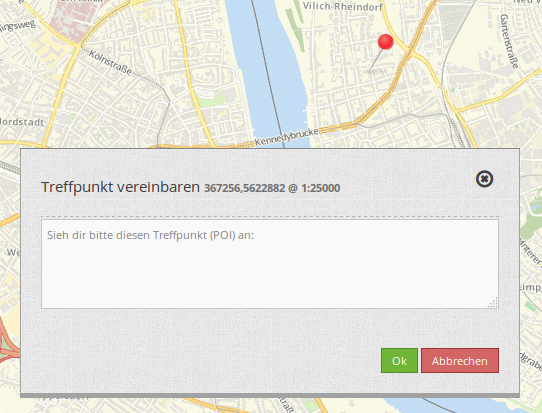
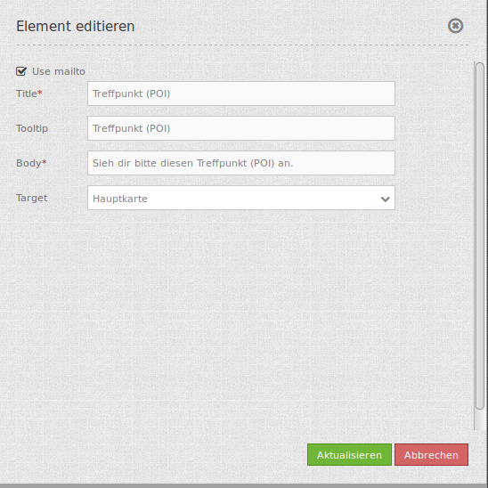

POI (Treffpunkt)¶
Generiert POI-URLs (Treffpunkt-URLS), verwendbar für das Verschicken eines Koordinatenpunkts per eMail. Dabei wird der übermittelte Punkte in das Koordinatensystem der Karte projeziert und angezeigt.
{kind=link}
Konfiguration¶
{kind=link}
- Title: Titel des Elements. Dieser wird in der Layouts Liste angezeigt und ermöglicht, mehrere Button-Elemente voneinander zu unterscheiden. Der Titel wird außerdem neben dem Button angezeigt, wenn “Beschriftung anzeigen” aktiviert ist.
- Tooltip: Text, der angezeigt wird, wenn der Mauszeiger eine längere Zeit über dem Element verweilt.
- Body: Dialogtext der nach dem Setzen eines POI angezeigt wird.
- Target: definiert das Kartenelement, auf dem der POI gesetzt wird.
- Use Mailto: nach dem Klick auf die Karte kann der POI Standort per Mail verschickt werden.
YAML-Definition:¶
target: map # only mapp-element is possible
body: 'Setzen Sie per Klick einen Treffpunkt' # definieren Sie einen Text für den Dialog
Class, Widget & Style¶
- Class: MapbenderCoreBundleElementPOI
- Widget: mapbender.mbPOI